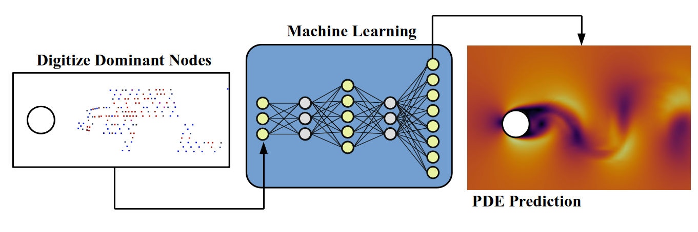

I am currently a Postdoctoral Fellow at the Polytechnique Montreal. My current work is establishing a digital twin framework for industrial applications using deep learning algorithms. I am also actively working on the novel architecture development of neural networks to be able to accelerate large-scale optimizations where conventional numerical solvers fail. Before joining Polytechnique, I was awarded the CQAM Postdoctoral fellowship at Fields Institute at the University of Toronto to develop reduced-order models for fluids in the Lagrangian system. I obtained my Ph.D. in Mechanical Engineering at Computational Aerodynamics Lab at Concordia University. My thesis was about understanding chaotic systems and controlling instability in chaotic optimizations.
My research is about AI-powered design and optimization for large chaotic systems with dominant unpredictability. Specifically, my work lies at the intersection of chaos theory, machine learning and fluid dynamics. I use physics-based machine learning algorithms to develop surrogate models for large-scale Partial Differential Equations (PDEs). Besides, I work on nonlinear fluid dynamic problems, such as dynamic stall, vortex-induced vibrations, and shape optimization in the presence of turbulent flows. Above all topics, mathematical concepts of nonlinear systems are my interest, where I can find the footprint of chaos in universal laws, modern technologies, and life stories!
Research highlights
AI-powered & physics-based simulations
At the Fields Institute, my mission was to study complex, large-scale dynamical systems and predict the physical behaviour of these non-linear systems in different scenarios. Unlike conventional methods for solving PDEs in a discrete physical domain (computationally expensive), I employ Artificial Intelligence (AI) and Koopman formalism to solve PDEs in Hilbert space. My research helps develop robust and efficient solvers for prediction, failure assessment, design and optimization. In other words, I use AI-powered physics-based modelling for turbulence, thermofluid analysis, load prediction, structural/Aeroelasticity analysis, and many other physical phenomena.

Multi-disciplinary Design Optimization (MDO)
Solving unsteady sensitivity equations is a challenging problem in large-scale constrained PDE optimization. With the advent of high-fidelity simulations and powerful computational resources, topology optimization struggles from the instability of Navier-Stokes equations. The Idea we are working on is to transfer the optimization framework from a physical 3D space to an unphysical space and solve optimization with lower computational costs with notable improvement in the stability of constrained PDEs. One example is drag minimization for NACA 0012 airfoil at AOA=25 degrees, where the airfoil experiences a massive flow separation. Animation (a) shows the initial case (NACA 0012 airfoil), and animation (b) presents the optimized shape. It is found that the optimization progress is successfully demonstrated with about 20% drag reduction.
(a) Initial shape
(b) Optimized shape
Uncertainty Quantification (UQ)
Sensitivity analysis becomes challenging for unsteady aerodynamic problems like the airfoil at high angles of attack exposed to massive flow separation. The reason is that Navier-Stokes equations are strongly non-linear PDEs, and sensitivity equations (either tangent or adjoint) diverge as the sensitivity solution advances in time. I could develop a framework compatible with any unsteady PDEs in a new approach. Using Machine Learning (ML), it is possible to train a surrogate model that is physically interpretative. This framework allows us to compute the sensitivity of the solution with respect to any design variable. This novel approach is applied to find the sensitivity of the drag coefficient with respect to the angle of attack at AOA=23 degrees and Re=1000. Animation (a) shows the velocity contours, and animation (b) shows the sensitivity solution.
Flow instability
The control strategy is a crucial matter in fluid dynamic problems. In the computational domain, the instability of flow may notably influence the instability of the numerical solver. This issue has prohibited developing control systems for strongly nonlinear systems for decades. One of my research studies is on stabilizing solutions for developing control models. As a case study, flow past a circular cylinder at Re=100 is considered. (a) The left-hand side figure shows dynamic responses of the reference model (red) in six sequential sub-spaces. The inlet flow is perturbed to figure out the influence of the Reynolds number on the flow field, hence the system's dynamic response. The uncontrolled (pink) system crashed without any tiny perturbation. On the other hand, the controlled system (blue) can track the dynamic response of the perturbed model, which indicates the controllability of the problem. (b) On the right-hand side, momentums in x and y directions are visualized, which indicates the remarked facts.